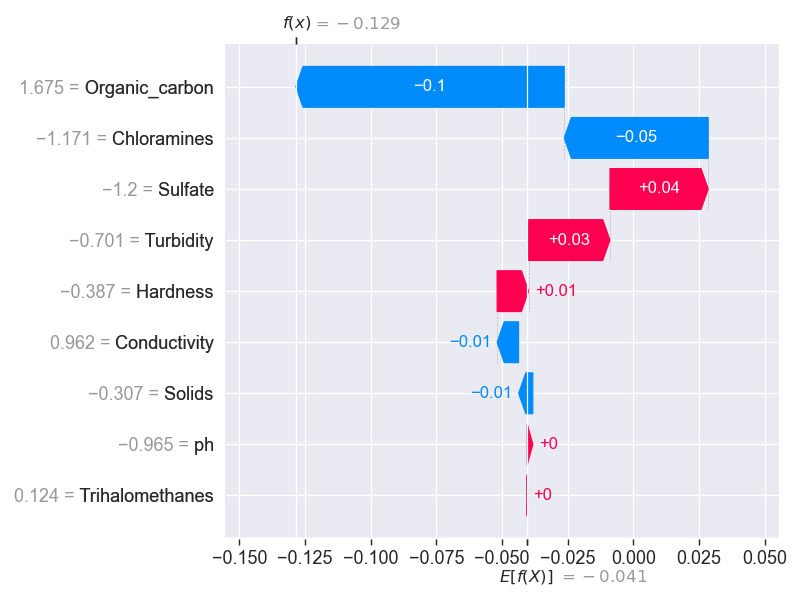
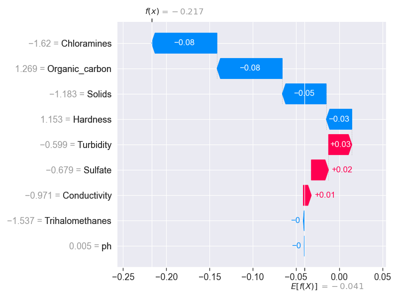
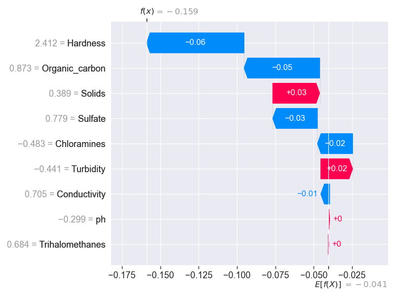
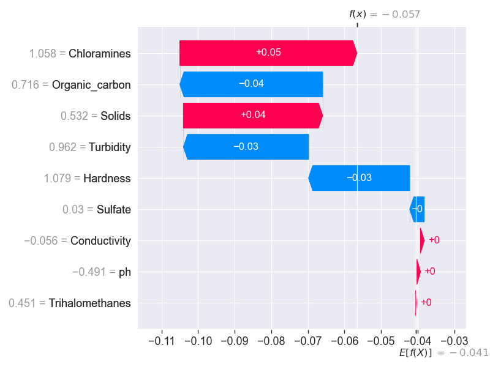
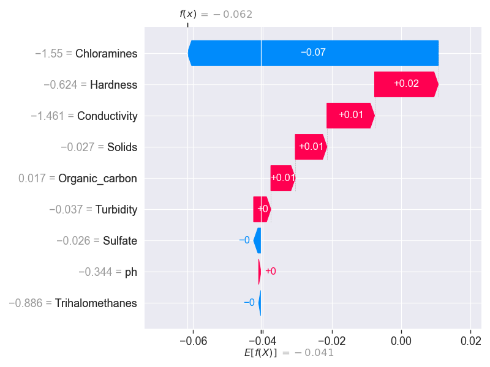
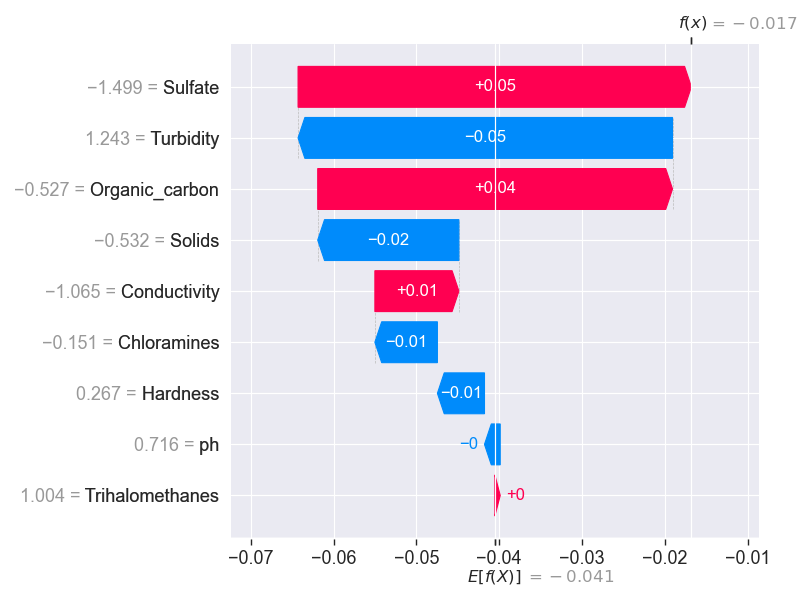
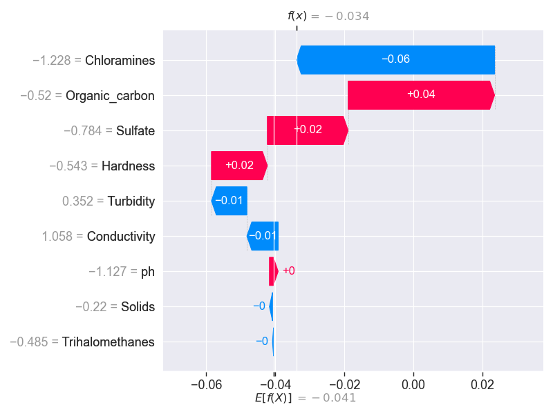
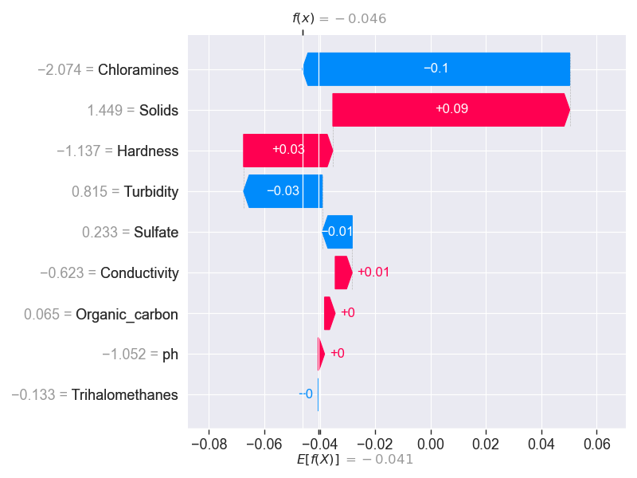
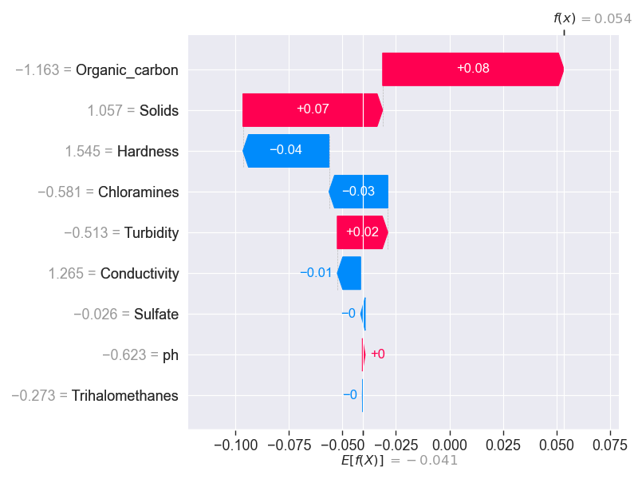
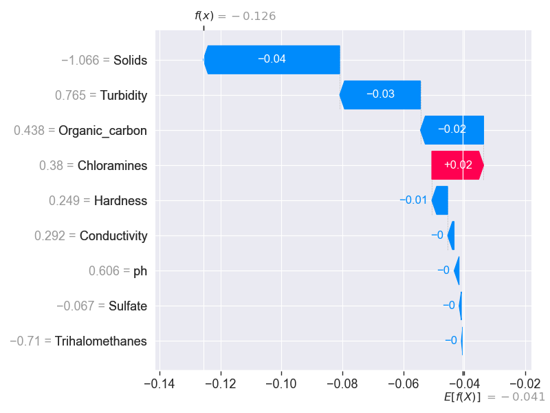

Waterfall Plot for Sample 1

Waterfall Plot for Sample 1
Predicted Class: 0
Prediction Probability: 0.51
Feature Values:
- ph: -0.9651
- Hardness: -0.3872
- Solids: -0.3073
- Chloramines: -1.1714
- Sulfate: -1.1997
- Conductivity: 0.9624
- Organic_carbon: 1.6752
- Trihalomethanes: 0.1240
- Turbidity: -0.7010
Waterfall Plot for Sample 2

Waterfall Plot for Sample 2
Predicted Class: 0
Prediction Probability: 0.58
Feature Values:
- ph: 0.0052
- Hardness: 1.1530
- Solids: -1.1833
- Chloramines: -1.6204
- Sulfate: -0.6788
- Conductivity: -0.9705
- Organic_carbon: 1.2691
- Trihalomethanes: -1.5372
- Turbidity: -0.5986
Waterfall Plot for Sample 3

Waterfall Plot for Sample 3
Predicted Class: 0
Prediction Probability: 0.51
Feature Values:
- ph: -0.2986
- Hardness: 2.4118
- Solids: 0.3891
- Chloramines: -0.4835
- Sulfate: 0.7786
- Conductivity: 0.7049
- Organic_carbon: 0.8729
- Trihalomethanes: 0.6844
- Turbidity: -0.4409
Waterfall Plot for Sample 4

Waterfall Plot for Sample 4
Predicted Class: 0
Prediction Probability: 0.50
Feature Values:
- ph: -0.4909
- Hardness: 1.0794
- Solids: 0.5316
- Chloramines: 1.0581
- Sulfate: 0.0299
- Conductivity: -0.0560
- Organic_carbon: 0.7165
- Trihalomethanes: 0.4506
- Turbidity: 0.9617
Waterfall Plot for Sample 5

Waterfall Plot for Sample 5
Predicted Class: 0
Prediction Probability: 0.47
Feature Values:
- ph: -0.3437
- Hardness: -0.6236
- Solids: -0.0265
- Chloramines: -1.5500
- Sulfate: -0.0255
- Conductivity: -1.4609
- Organic_carbon: 0.0166
- Trihalomethanes: -0.8859
- Turbidity: -0.0371
Waterfall Plot for Sample 6

Waterfall Plot for Sample 6
Predicted Class: 0
Prediction Probability: 0.50
Feature Values:
- ph: 0.7164
- Hardness: 0.2668
- Solids: -0.5316
- Chloramines: -0.1505
- Sulfate: -1.4993
- Conductivity: -1.0646
- Organic_carbon: -0.5269
- Trihalomethanes: 1.0035
- Turbidity: 1.2433
Waterfall Plot for Sample 7

Waterfall Plot for Sample 7
Predicted Class: 0
Prediction Probability: 0.53
Feature Values:
- ph: -1.1270
- Hardness: -0.5431
- Solids: -0.2197
- Chloramines: -1.2277
- Sulfate: -0.7836
- Conductivity: 1.0583
- Organic_carbon: -0.5204
- Trihalomethanes: -0.4853
- Turbidity: 0.3516
Waterfall Plot for Sample 8

Waterfall Plot for Sample 8
Predicted Class: 0
Prediction Probability: 0.50
Feature Values:
- ph: -1.0516
- Hardness: -1.1373
- Solids: 1.4485
- Chloramines: -2.0736
- Sulfate: 0.2331
- Conductivity: -0.6228
- Organic_carbon: 0.0655
- Trihalomethanes: -0.1326
- Turbidity: 0.8150
Waterfall Plot for Sample 9

Waterfall Plot for Sample 9
Predicted Class: 1
Prediction Probability: 0.48
Feature Values:
- ph: -0.6233
- Hardness: 1.5446
- Solids: 1.0571
- Chloramines: -0.5813
- Sulfate: -0.0255
- Conductivity: 1.2646
- Organic_carbon: -1.1632
- Trihalomethanes: -0.2731
- Turbidity: -0.5132
Waterfall Plot for Sample 10

Waterfall Plot for Sample 10
Predicted Class: 0
Prediction Probability: 0.54
Feature Values:
- ph: 0.6059
- Hardness: 0.2488
- Solids: -1.0661
- Chloramines: 0.3799
- Sulfate: -0.0666
- Conductivity: 0.2915
- Organic_carbon: 0.4384
- Trihalomethanes: -0.7100
- Turbidity: 0.7653